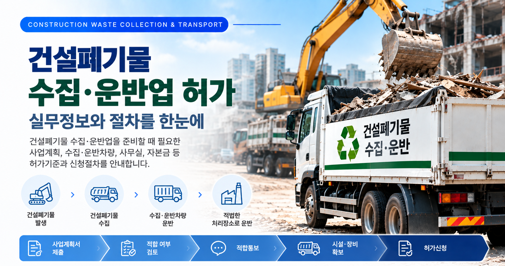
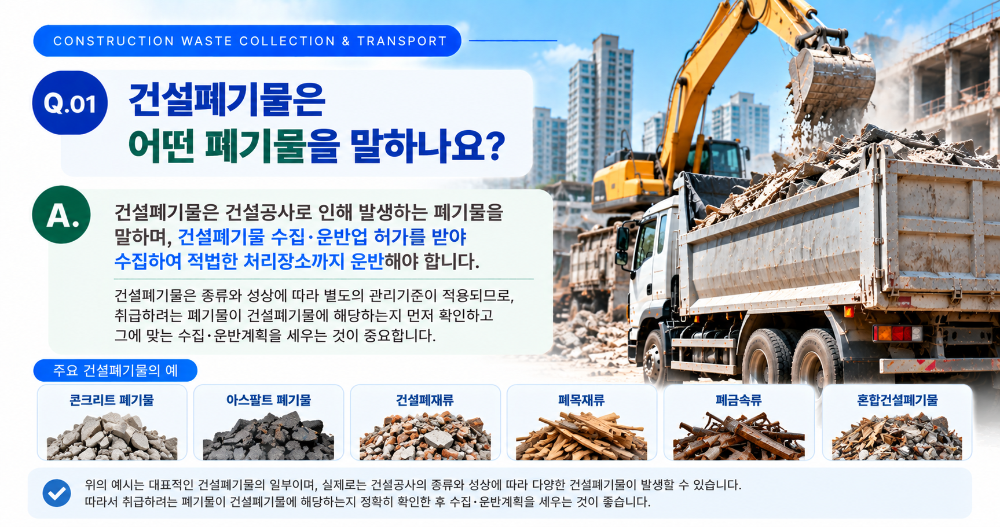
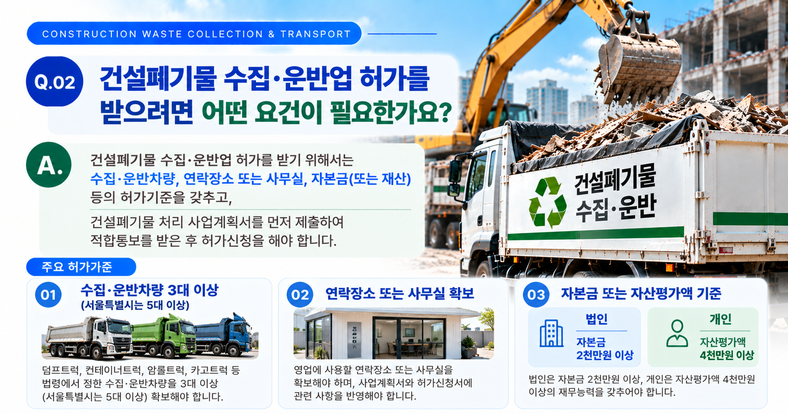
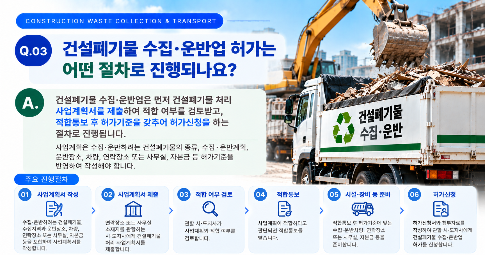

건설폐기물 수집·운반업은 단순히 차량만 준비한다고 허가를 받을 수 있는 업무가 아닙니다. 어떤 건설폐기물을 어디에서 수집하여 어디로 운반할 것인지 사업내용을 먼저 구체화하고, 그에 맞는 차량·연락장소 또는 사무실·재무요건 등을 검토하여 사업계획을 준비해야 합니다.
01. 건설폐기물 수집·운반업이란?
건설공사 과정에서 발생하는 건설폐기물을 발생현장에서 수집하여 적정한 처리장소까지 운반하는 영업을 말합니다.
건설폐기물은 일반적인 폐기물과 동일하게 접근하기보다 「건설폐기물의 재활용촉진에 관한 법률」에 따른 별도의 허가체계와 기준을 확인해야 합니다.
먼저 확인할 사항
- 수집·운반하려는 폐기물의 종류
- 폐기물이 발생하는 건설현장
- 수집하려는 지역과 영업범위
- 운반할 처리장소
- 예상되는 수집·운반량

02. 영업대상 건설폐기물을 먼저 확인합니다
허가를 준비할 때는 단순히 '건설현장에서 나오는 폐기물'이라고 정리하기보다 실제로 어떤 폐기물을 수집·운반할 것인지 구체적으로 확인하는 것이 중요합니다.
| 확인사항 | 검토내용 |
|---|---|
| 폐기물 종류 | 수집·운반하려는 건설폐기물의 종류와 성상을 확인합니다. |
| 발생현장 | 어떤 종류의 건설공사에서 발생하는 폐기물인지 확인합니다. |
| 수집지역 | 실제 영업하려는 지역과 건설현장의 범위를 정리합니다. |
| 운반장소 | 수집한 건설폐기물을 운반할 적정 처리장소를 확인합니다. |
03. 수집·운반계획을 구체적으로 정리합니다
영업대상이 정해졌다면 실제 건설폐기물이 어떻게 이동하는지를 기준으로 수집·운반계획을 구체화해야 합니다.
- 건설폐기물의 발생현장
- 수집지역 및 영업범위
- 예상 수집·운반량
- 사용할 수집·운반차량
- 운반경로 및 운반방법
- 최종 운반할 처리장소
이 내용은 사업계획서와 이후 허가신청 단계의 수집·운반계획을 작성하는 기초가 됩니다.

04. 수집·운반차량 기준을 확인합니다
건설폐기물 수집·운반업은 법령에서 정한 수집·운반차량을 확보해야 합니다.
| 구분 | 허가기준 |
|---|---|
| 일반 지역 | 수집·운반차량 3대 이상 |
| 서울특별시 | 수집·운반차량 5대 이상 |
허가기준에서 정하는 차량에는 덤프트럭, 컨테이너트럭, 암롤트럭, 카고트럭, 기계식 상차장치가 부착된 차량, 밀폐식 차량 또는 탱크로리 등이 포함됩니다.
다만 차량을 먼저 구입하기보다는 수집·운반하려는 건설폐기물의 종류와 영업지역, 운반방법을 먼저 정한 후 실제 사업에 적합한 차량과 필요한 대수를 확인하는 것이 좋습니다.
05. 연락장소 또는 사무실을 확보합니다
건설폐기물 수집·운반업의 허가기준에는 연락장소 또는 사무실이 포함됩니다.
특히 수집·운반업의 건설폐기물 처리 사업계획서는 연락장소 또는 사무실 소재지를 관할하는 시·도지사에게 제출하게 되므로, 사업계획 단계에서부터 실제 사용할 장소를 명확하게 정해 두는 것이 중요합니다.
- 연락장소 또는 사무실의 소재지
- 실제 사용 가능 여부
- 사용권한을 확인할 수 있는 자료
- 사업계획서와 신청서상의 주소 일치 여부
06. 자본금 또는 자산평가액 기준을 확인합니다
사업자 형태에 따라 재무능력에 관한 허가기준이 다르게 적용됩니다.
| 사업자 형태 | 기준 |
|---|---|
| 법인 | 자본금 2천만원 이상 |
| 개인 | 자산평가액 4천만원 이상 |
따라서 법인인지 개인사업자인지에 따라 준비해야 할 재무자료가 달라질 수 있으므로 사업계획 단계에서 미리 확인하는 것이 좋습니다.

07. 사업계획서 제출 후 적합통보를 받아야 합니다
건설폐기물 수집·운반업은 처음부터 허가신청서를 제출하는 방식이 아니라, 먼저 건설폐기물 처리 사업계획서를 제출하여 적합 여부를 검토받는 절차를 거칩니다.
수집·운반업의 경우 사업계획서에 건설폐기물의 수집·운반계획과 장비 등의 확보계획을 포함한 관련 자료를 첨부하여 제출하게 됩니다.
사업계획 단계의 주요 검토사항
- 수집·운반하려는 건설폐기물
- 수집지역과 운반장소
- 수집·운반방법
- 수집·운반차량 확보계획
- 연락장소 또는 사무실
- 자본금 또는 자산평가액
- 허가기준 충족 가능 여부
사업계획이 적합하다는 통보를 받은 후에는 실제 허가기준을 갖추어 허가를 신청합니다. 수집·운반업은 원칙적으로 적합통보를 받은 날부터 6개월 이내에 허가신청을 해야 합니다.
08. 허가신청 전 전체 내용을 다시 점검합니다
사업계획 적합통보를 받은 뒤에는 계획서에 기재했던 내용과 실제 확보한 차량·사무실·재무요건 등이 서로 일치하는지 최종적으로 확인하는 것이 중요합니다.
허가신청 단계에서 확인할 자료
- 건설폐기물 처리업 허가신청서
- 시설 및 장비명세서
- 건설폐기물 수집·운반계획서
- 자본금 또는 재산을 증명하는 서류
- 그 밖에 신청내용에 따라 필요한 자료
특히 사업계획서의 내용과 실제 허가신청 내용이 달라지지 않았는지 함께 확인하는 것이 좋습니다.
건설폐기물 수집·운반업을 준비하고 계신가요?
건설폐기물의 종류와 수집·운반계획, 차량·연락장소 또는 사무실·재무요건부터 사업계획서와 허가신청까지 준비사항을 확인해 보실 수 있습니다.
※ 건설폐기물 수집·운반업의 구체적인 허가기준과 제출자료 및 절차는 영업지역, 사업자 형태, 취급하려는 건설폐기물과 사업내용 등에 따라 달라질 수 있습니다. 실제 신청 전에는 최신 「건설폐기물의 재활용촉진에 관한 법률」 및 하위법령과 관할기관의 적용기준을 함께 확인하는 것이 좋습니다.